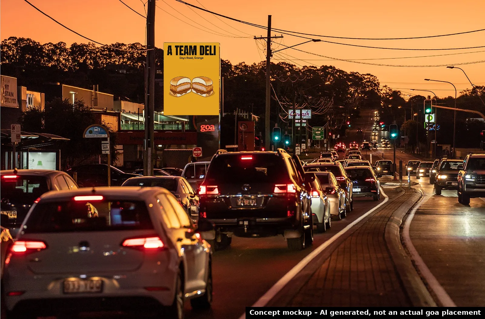
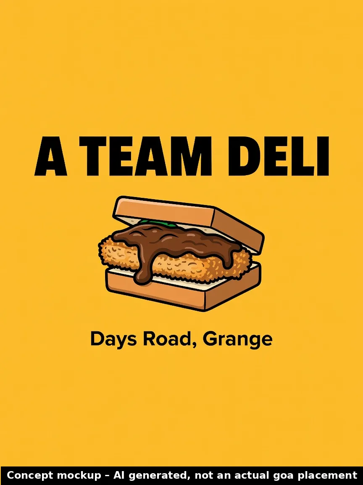

A Team Deli
Why now: New deli opened on Days Road, Grange (Japanese curry sandos, banana bread).
🗓 Opened Oct 2026 · Source: Brisbane Times Good Food, 9 Oct 2026 ↗

Where your audience drives
Business location approximate (from the published address/suburb). goa site coordinates from goa's public site locator. © OpenStreetMap contributors.
Priority score 88/100
Why 88? Score breakdown
| Trigger certainty | 25/25 | Confirmed (opened / approved) | |
| goa site proximity | 21/25 | nearest 1.2 km; 8 goa sites within 2 km | |
| Category fit for OOH | 14/20 | Small food retail launch, smaller budgets | |
| Timing window | 15/15 | key date Oct 2026 (month only) (~6 days ago) | |
| Source strength | 13/15 | Established news publisher |
Heuristic priority score from the factors above, not a prediction of sales outcomes.
Campaign builder
Pick sites and flight length to shape a brief. Pricing isn't shown: indicative pricing confirmed by goa.
Indicative pricing confirmed by goa. Availability subject to booking.
Campaign timeline
- NowRep reviews trigger and approves the draft pitch
- Oct 2026Trigger: Opened Oct 2026
- 28 OctSuggested flight start: launch awareness while the opening is fresh
- 25 NovMid-flight check-in: refresh creative / dayparting on digital
- 12 DecQLD summer school holidays begin (to 26 Jan 2027): optional seasonal burst
Concept creative

Concept mockup – AI generated, not an actual goa placement. No real logos used; final creative from the client.
Idea
Create a mouth-watering creative showcasing the Japanese curry sandos and banana bread with a simple call to visit the new Grange location. Use bold colours and clean photography that matches the fresh deli offering to stand out on the goa GRID network.
Objective
Drive awareness and foot traffic to the new A Team Deli in its opening period.
Audience
Local residents and workers in Brisbane's inner north suburbs looking for quality cafe and deli options.
Draft pitch email
Subject: Promote your new Grange deli Hi there, A new deli has opened on Days Road in Grange offering Japanese curry sandos and banana bread according to the Brisbane Times Good Food on 9 Oct 2026. This is a great opportunity to drive awareness and foot traffic while the business is fresh in the minds of locals. I recommend using either of the two goa GRID sites at 434 Stafford Rd Stafford only 1.2 km away or the site at Enoggera Rd and Samford Rd Alderley 1.7 km away. Both deliver strong coverage of the inner north catchment. Would you have time for a quick 15 minute chat to explore how we can support your opening? [Rep name], goa Reply STOP to opt out.
AI draft. Requires rep review and approval; sent only from the rep's Outlook, with opt-out (Spam Act 2003).
Next step
Book a 15-minute chat with the goa team to confirm availability and indicative pricing for your selected sites.
Talk to goa →